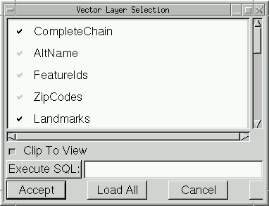

Vector Layer Selection
The Vector Layer Selection dialog is displayed when the user selects
a supported vector file other than a shapefile. It allows the user to
select the layers they want to select out of the file, as well as potentially
loading only a subarea or subset.

The dialog sections are:
- Layers List: Clicking on layers will toggle whether they should
be loaded or not. When a layer is to be loaded, the check mark will be
drawn in black. By default no layers are loaded.
- Clip To View: This toggle button can be enabled to request that
only vectors in the current view area should be loaded. Note that any
vector that appears to intersect the current 2D bounding rectangle will be
loaded and complete individual vector features are still loaded ... no
actual clipping occurs within features. However, any features outside the
area of the view will not be loaded.
- Execute SQL: An SQL statement-like statement can be entered
in the text area to the left of this button. Hit execute and the result
of the query will be returned as a layer. Note that when accessing a real
database (such as PostgreSQL or Oracle) this request is passed through to
the underlying database. Simple file formats only support a simplified
SQL WHERE statement. See the
OGR library web page
for further details.
- Accept: Loads the currently selected layers (if any) according
to the current Clip To View setting.
- Load All: Loads all layers according to the current Clip To
View setting.
- Cancel: Closes the dataset without any loading.
- Help: Displays this page.
The Vector Layer Selection dialog is not current user accessable when
reading from Shapefiles, but from Python it can be used even for shapefiles
by calling GvViewWindow.file_open_ogr_by_name() instead of the higher level
GvViewArea.file_open_by_name().